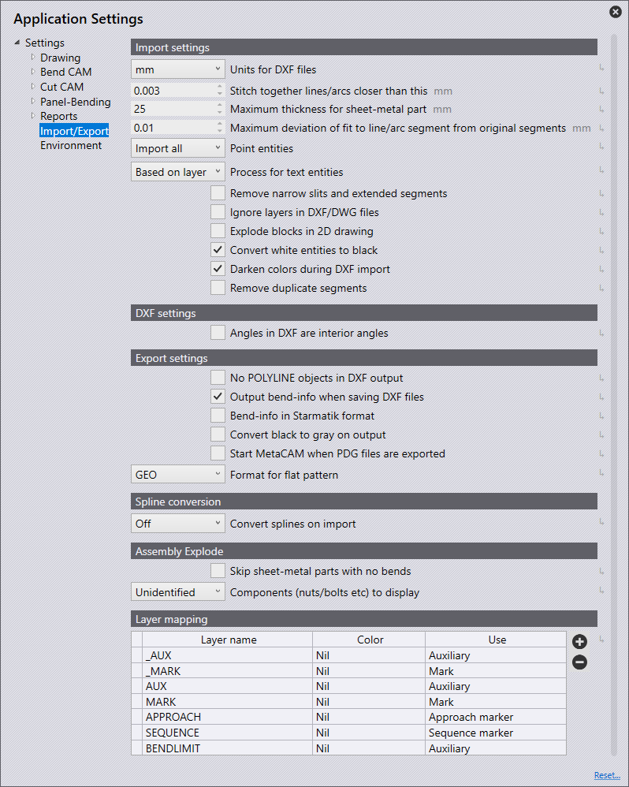
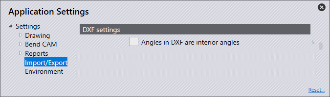

Import/eksport
I dette afsnit vil vi dække konfigurationen af Import settings.

Klik på ikonet Settings  fra startsiden.
fra startsiden.

Import settings
I dette afsnit vil vi dække konfigurationen af Import settings. Klik på ikonet Settings. Klik på Import/Export og navigér til Import settings.

Units for DXF files - Indstil til enten millimeter eller tommer her.
Stitch together lines/arcs closer than this - Indstil denne værdi (0>1 mm). Ved import af en del, der har linjer/cirkelbuer mere tætte end indstillet værdi, vil softwaren automatisk sætte sammen ved import.
Maximum thickness for sheet-metal part - For at registrere en stor plademetaldel, skal tærsklen for metalregistrering øges. (10>40mm) Dette indstilles automatisk som standard til 25 mm eller en tomme, afhængigt af den enhed, der anvendes.
Point entities - Afhængigt af valgt option afgøres, hvordan punkter importeres.
Import all - Alle punkter vil blive importeret og vist.
Skip points on polylines - Dette overspringer alle punkter, der registreres på polylinjer.
Skip all - Dette overspringer alle punkter ved import, og ingen vises.
Ignore layers in DXF/DWG files - DXF- og DWG-tegninger er som regel oprettet på forskellige lag. Med denne indstilling ignorerer softwaren disse lag og flytter alle objekter til standardlaget.
Explode blocks in 2D drawing - Opdeler grupperinger under import
Convert white entities to black - Slå denne indstilling til for at konvertere hvide objekter til sorte objekter under import.
Darken colors during DXF import- Slå denne indstilling til for at mørkne farvede objekter under import.
Remove duplicate segments - Slå denne indstilling til for at fjerne eventuelt duplikeret geometri, der findes i delen, når der importeres.
DXF settings
I dette afsnit vil vi dække konfigurationen af DXF settings. Klik på ikonet Settings. Klik på Import/Export og navigér til DXF settings.

Angles in DXF are interior angles - Aktivér denne indstilling for at vinklerne i en DXF håndteres som åbningsvinkler.
Export settings
I dette afsnit vil vi dække konfigurationen af Export settings. Klik på ikonet Settings. Klik på Import/Export og navigér til Export settings.

No POLYLINE objects in DXF output - Normalt udlæses lukkede konturer som polylinjer, når der eksporteres DXF’er. Nogle CAD-systemer kan ikke behandle dette output. Med denne indstilling producerer softwaren DXF med linjer og cirkelbuer. Disse filer kan læses overalt, men de oprettede filer er større, og forbindelserne mellem linjer og ciekelbuer går tabt.
Output bend-info when saving DXF files - Slå denne indstilling til for en eksporteret DXF, der skal ud med bukningsinformation.
Bend-info in Starmatik format - Tænd for denne kontakt for at få bukninginformation ud i Starmatik-format. Dette er, hvor en tekstenhed er placeret præcist i midten af hver linje, der skal være en bukningslinje.
Convert black to gray on output - Når 2D-data eksporteres, sendes objekterne i DXF-filen som standard ud i sort. For bedre at kunne registrere objekterne i CAD-programmerne, vises objekterne i gråt med denne indstilling.
Start MetaCAM when PDG files are exported - Slå denne indstilling til for en PDG-fil, der automatisk skal konfigureres til at åbne i MetaCAM
Format for flat pattern - Når der eksporteres et fladt mønster, kan dette sættes til filformaterne GEO, DXF eller PDG.
Spline conversion
I dette afsnit vil vi dække konfigurationen af indstillingerne Spline conversion. Klik på ikonet Settings. Klik på Import/Export og navigér til indstillingerne Spline conversion.

Convert splines on import - Indstil her om splinekonvertering er slået fra eller indstillet til at konvertere spliner til linjer eller ciekelbuer. I i begge tilfælde vil hver splinekurve blive konverteret til et enkelt polylinjeobjekt, der indeholder linjesegmenter eller ciekelbuesegmenter.
Node-count computation - Antallet af linjer eller cirkelbuer, der genereres, beregnes ved hjælp af en af to mekanismer: Stigning eller afvigelse.
Length of each line or arc segment - Hvis Stigning vælges i knudeoptællingsberegningen, indstil her længden af hver cirkelbue eller linjesegment for at opdele splinen ved brug af denne trinlængde.
Maximum deviation during approximation - Hvis Afvigelse vælges i knudeoptællingsberegningen, indstil her den maksimale afvigelse, der er tilladt mellem den originale glatte spline og linje- eller ciekelbuetilnærmelsen. Polylinjen er konstrueret med så få segmenter som muligt, samtidig med at den maksimale fejl holdes inden for denne grænse.
Assembly Explode
I dette afsnit dækker vi konfigurationen af indstillingerne Assembly Explode. Klik på ikonet Settings. Klik på Import/Export og navigér til indstillingerne Assembly Explode.

Skip sheet-metal parts with no bends - Når et modul opdeles, vil aktivering af denne kontakt kun vise plademetaldele med bukningslinjer. Slukkes der, vises alle dele i modulet.
Components (nuts/bolts etc) to display - Brug denne indstilling til at vælge, hvilke optioner der skal vises, når et modul opdeles, so indeholder andre komponenter,
None - Kun plademetaldele vises efter opdelingen, og andre møtrikker/bolte vises ikke.
Unidentified - Der vises kun komponenter, der endnu ikke er identificeret i softwaren.
All - Alle komponenter vises.
Layer mapping

I dette afsnit vil vi dække konfigurationen af Layer mapping. Klik på ikonet Settings. Klik på, Import/Export og navigér til indstillingerne Layer mapping.
I dette afsnit kan lag, der bruges på dele, som importeres til softwaren, automatisk kortlægges til deres funktionalitet (brug).
Hvis en importeret del har et MARKERINGS-lag, kan denne indstilles til automatisk brug af Markerings-laget i softwaren.
Layer name - Dette er navnet på det lag, som hvis en del er importeret hermed, vil den bruge den funktionalitet, der er indstillet i panelet 'Brug'.
Use - Dette er lagets funktionalitet. De forskellige tilgængelige optioner er:
Standard - Dette er standardlaget, der skal bruges til CAM.
Auxiliary - Et ekstra lag, der ikke skal bruges til CAM.
Mark - Alle enheder i dette lag vil være markeret, ikke skåret.
Approach marker - Punktenheder, der angiver laserstartpositionen.
Sequence marker - Tekstmarkører, der angiver rækkefølgen af konturer.
Forming center - Centrisk markering for formgivning (punkt eller lille L).
Forming foot print - Omridset (fodaftrykket) af en formfivning.
Evaporate - Dette lag vil blive brugt til at adskille folieindbrænding.
Dot marking - Dette lag vil blive brugt til QR-koder.
Info - Dette er et lag, der kun indeholder information.